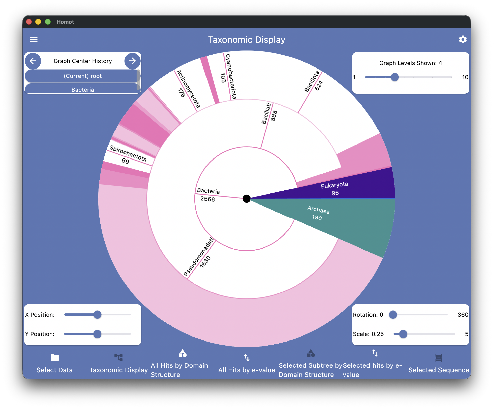
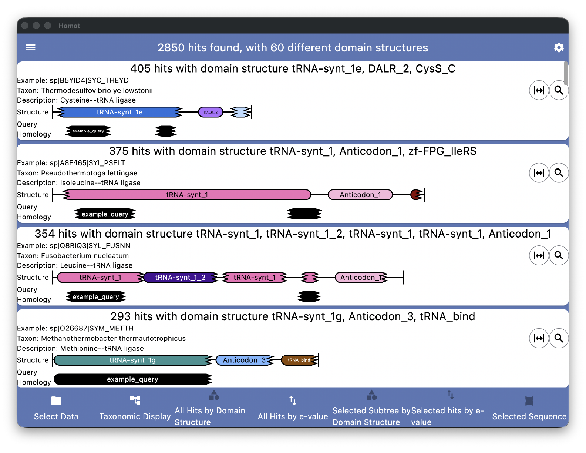
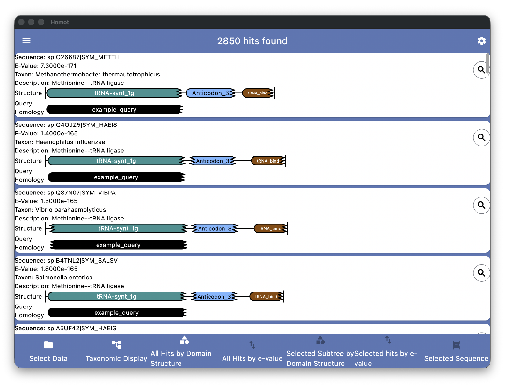

Homot: A Viewer for Homology Search Results
Homot is a tool for visualizing and exploring the results of homology searches. It accepts results in HMMER's .domtblout and BLAST's tabular formats. It can display results on a taxonomic tree, grouped by structure (the domains or other regions of interest in each homolog), or sorted by e-value. To display search results, Homot needs an "annotations database" for the sequence set that was searched, which contains information about the regions of interest (typically Pfam domains) and taxonomic locations of the sequences in the set. We have a few annotations databases available, and the source code distribution of Homot contains a program to annotate sequence sets.

Homot's taxonomic display allows users to see how their search results are distributed across the tree of life, making it easy to identify both where the bulk of results lie and where there are outliers. Users can explore their results by re-rooting the tree at any node to see more detail, by removing nodes from the graph to allow more room for others, and by changing the number of levels of the taxonomy displayed. Selecting a sub-tree also allows the results in that sub-tree to be viewed by structure and by E-value.

Homot's structure display groups homologs by the set of domains or other regions of interest that they contain, allowing users to see the breadth of results from their search, zoom in on the results of most interest, and avoid losing unusual results in a sea of close homologs. Homot displays each class of results graphically, showing where the regions of interest lie in each homolog and where homology was found between the query object and the search result. Users can also select an individual result to see more detail about it.

Sorting results by E-value mimics the default output of most tools in a graphical manner, showing the user where regions of interest lie on each homolog found and where homology was found to the query object.
Want to Try Homot?
- Download an installer for your OS from the list below and install Homot using the normal process for your system<./li>
- Download the example data and unzip/untar it.
- Start Homot. Using the file folder icons on the screen that comes up, select homot_example/swissprot-26_03_annotated as the annotations database and example_data/example.domtblout as the results file.
- Click "Load Data" and start exploring.
Pfam Domain Annotations
for UniProt Datasets
Source Datasets
UniProt SwissProt 26_03(Annotations Database) UniProt SwissProt 26_03
(From UniProt) UniProt SwissProt 26_03
(Annotations Database) UniProtKb 26_03
(From UniProt)